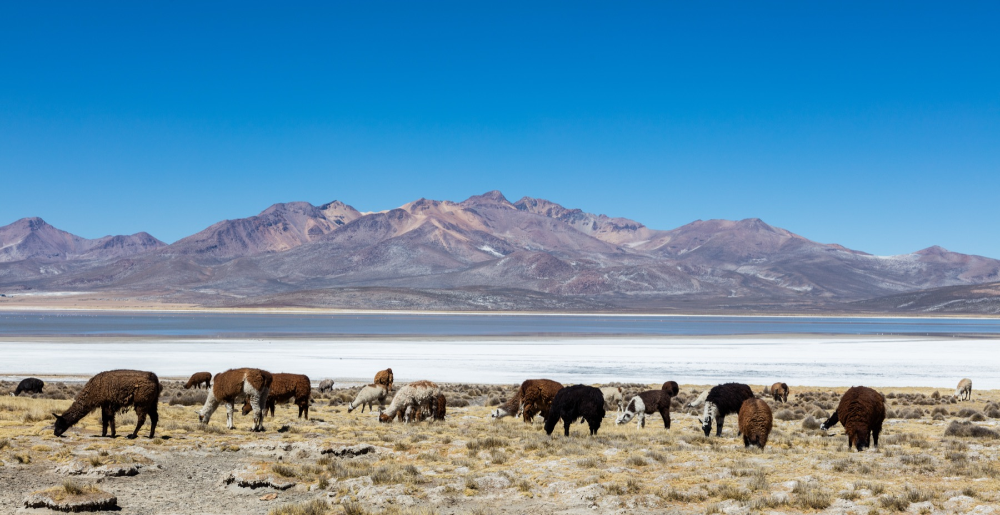
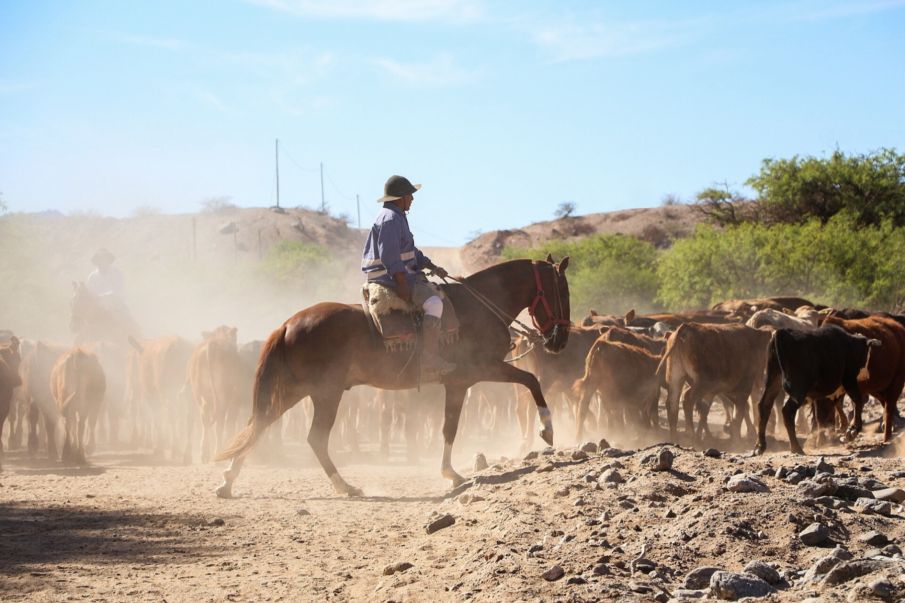
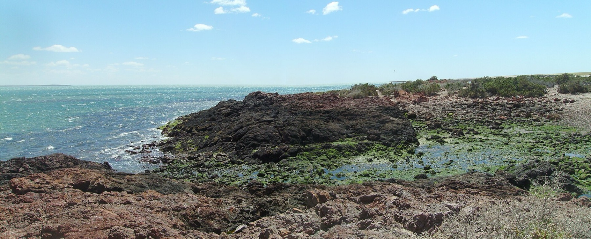

Destination
Argentina
Pampas, gauchos and small towns within reach of Buenos Aires — plus the penguin coast of Patagonia.
Pampas, gauchos and small towns within reach of Buenos Aires — plus the penguin coast of Patagonia.

Wander between delicatessens, build a picnic from cured meats and cheese, and watch the sun drop over Piedra Movediza.

An old railway village where the real reward is a slow walk between country stores, not just the long lunch.

Family-run dairies, a blueberry farm and a tiny alfajor workshop turn food into the whole itinerary.

Silverwork, an old pulpería and a gaucho museum make this the most complete gateway to criollo Argentina.

A working sheep farm in the morning, a long Argentine bodegón lunch by afternoon.

No single landmark defines this village — only a collection of small, brick-and-tin details worth noticing.

Horsemen, folklore and a code of hospitality that still shapes the Argentine countryside today.

A one-street village built around a single long lunch table and absolutely nothing else to do.

An unhurried farm afternoon spent among alpacas, far from any checklist of famous sights.

A glass geodesic dome under the open pampas sky turns one night into the whole trip.

From the milking parlour to the supermarket shelf — a look inside Argentina's biggest dairy.

Asado over open coals, horsemanship demonstrations and an afternoon inside a working estancia.

On this stretch of Patagonian coast, the penguins decide who has right of way.

A practical guide to visiting the largest Magellanic penguin colony in South America.